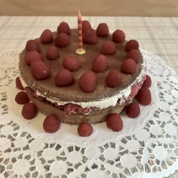
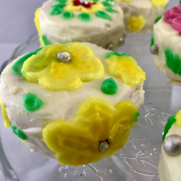
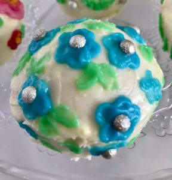

<?xml version="1.0" encoding="UTF-8"?><rss version="2.0"
	xmlns:content="http://purl.org/rss/1.0/modules/content/"
	xmlns:wfw="http://wellformedweb.org/CommentAPI/"
	xmlns:dc="http://purl.org/dc/elements/1.1/"
	xmlns:atom="http://www.w3.org/2005/Atom"
	xmlns:sy="http://purl.org/rss/1.0/modules/syndication/"
	xmlns:slash="http://purl.org/rss/1.0/modules/slash/"
	>

<channel>
	<title>Decoration &#8211; Levia Wegner</title>
	<atom:link href="" rel="self" type="application/rss+xml" />
	<link>../../../index.html</link>
	<description>Baking &#38; Happiness</description>
	<lastBuildDate>Mon, 28 Oct 2024 11:18:11 +0000</lastBuildDate>
	<language>en-US</language>
	<sy:updatePeriod>
	hourly	</sy:updatePeriod>
	<sy:updateFrequency>
	1	</sy:updateFrequency>
	<generator>https://wordpress.org/?v=6.8.2</generator>

<image>
	<url>../../../wp-content/uploads/2021/06/Levia-L2-150x150.png</url>
	<title>Decoration &#8211; Levia Wegner</title>
	<link>../../../index.html</link>
	<width>32</width>
	<height>32</height>
</image> 
	<item>
		<title>Caramel Decoration</title>
		<link>../../../caramel-decoration/index.html</link>
		
		<dc:creator><![CDATA[Levia Lydia Wegner]]></dc:creator>
		<pubDate>Mon, 28 Oct 2024 11:18:11 +0000</pubDate>
				<category><![CDATA[Decoration]]></category>
		<category><![CDATA[Sweetness]]></category>
		<category><![CDATA[Caramel]]></category>
		<guid isPermaLink="false">https://www.leviawegner.com/?p=1543</guid>

					<description><![CDATA[I give you the first in The Caramel Saga. A tale of triumphs and failures, testing and learning.]]></description>
										<content:encoded><![CDATA[<p>Caramel is a tricky treat that requires lots of precision and attention. Below, I recorded my process and notes on what to improve on next time.</p>
<h2>Recipe</h2>
<h3>Ingredients</h3>
<ul>
<li>200g sugar (100%)</li>
<li>optional nuts</li>
</ul>
<h3>Process</h3>
<ol>
<li>Prepare a baking sheet lined with parchment paper. In my case, I cut out little leaf shapes.</li>
<li>Heat the sugar in a pot at medium heat. It should reach a temperature between 160-177C.</li>
<li>It took 10 minutes for the sugar to start melting.</li>
<li>7 minutes later, the sugar completely melted and caramelized, ready to be poured out.</li>
<li>Using a pastry brush, I spread some of the caramel on the leaf shapes.</li>
<li>After the caramel has hardened, letting it drop onto the table made it break into pieces.</li>
</ol>
<h3>Notes</h3>
<p>First, make sure to spread caramel to get a thin surface. The small shards look like amber pieces and would look great as decoration.<br />
I should test dusting the caramel with starch or powdered sugar to reduce stickiness.<br />
Though a simple recipe and process, this one is a success.</p>
<p>Update:</p>
<p>I did try dusting the caramel with powdered sugar and it did help. Since I used caster sugar, the leaves had a pretty border, as can be seen in the image.</p>
<h3>Watch out! Sharp edges!</h3>
]]></content:encoded>
					
		
		
			</item>
		<item>
		<title>Carrot Cake</title>
		<link>../../../carrot-cake/index.html</link>
		
		<dc:creator><![CDATA[Levia Lydia Wegner]]></dc:creator>
		<pubDate>Sun, 26 Sep 2021 12:14:48 +0000</pubDate>
				<category><![CDATA[Baking Powder]]></category>
		<category><![CDATA[Cake]]></category>
		<category><![CDATA[Decoration]]></category>
		<category><![CDATA[Sweetness]]></category>
		<category><![CDATA[Asia]]></category>
		<category><![CDATA[Persia]]></category>
		<category><![CDATA[Sweet]]></category>
		<guid isPermaLink="false">https://www.leviawegner.com/?p=1196</guid>

					<description><![CDATA[Autumn, harvest, fall. Whatever you call it, it means apples, cinnamon, carrots and other distinct flavours. What better way to celebrate this season than a carrot cake?]]></description>
										<content:encoded><![CDATA[<p>Carrot cake as we know it today is believed to be from <strong>Persia</strong>, however using carrots in a cake was no unusual practice. Around the 15th century, sugar was scarce and expensive. Not many people could afford to buy and much less use large amounts of sugar. That is when carrots came in. The roots have a sweetness to them that could replace the sugar in the cake. Of course, nowadays we don&#8217;t have to rely on the sweetness of the root, but it still adds a nice flavour to the cake.</p>
<h2>Ingredients</h2>
<p>Cake base:</p>
<ul>
<li>400g Carrots</li>
<li>85g Crunchy Almonds</li>
<li>100g Flaked Almonds</li>
<li>200g Flour</li>
<li>1tsp Baking Powder</li>
<li>1 pinch Salt</li>
<li>4 Eggs</li>
<li>250g Sugar</li>
<li>100ml Sunflower Oil</li>
<li>5Tbsp Orange Juice</li>
<li>Butter for greasing</li>
</ul>
<p>Topping and decoration:</p>
<ul>
<li>200g Powdered Sugar</li>
<li>5 Tbsp Orange Juice</li>
<li>60g Fondant</li>
<li>Yellow, Red and Blue Food colouring</li>
</ul>
<h2>Instructions</h2>
<ol>
<li>Wash the carrots, cut their ends and grate them.</li>
<li>Add the almonds to the carrots.</li>
<li>Mix the baking powder and salt into the flour.</li>
<li>Pour the flour into the carrot almond mixture and stir well until the carrots are well coated.</li>
<li>Set the mixture aside and preheat the oven to 160ºC.</li>
<li>Separate the egg yolk from the whites.</li>
<li>Mix the oil, juice and sugar into the egg yolks.</li>
<li>Beat the egg whites until stiff.</li>
<li>Add the egg yolk mixture to the carrots stir well.</li>
<li>Fold in the egg whites.</li>
<li>Pour the batter into a greased cake pan.</li>
<li>Bake the cake for 50-55 minutes or until a toothpick comes out clean.</li>
</ol>
<p>Decoration and Topping</p>
<ol>
<li>While the cake is in the oven, prepare the decoration.</li>
<li>Separate 40g of fondant from the 60g and add yellow and red until obtaining the desired orange colour.</li>
<li>Add blue and yellow to the remaining 20g. Mix well until the fondant is the correct green colour.</li>
<li>Roll out the fondant. Fold the orange one in half.</li>
<li>Cut six pieces off the orange fondant.</li>
<li>Roll out the green fondant and cut thin strips from it.</li>
<li>Cut triangles into the green fondant and roll it up.</li>
<li>Shape the orange fondant into little carrots and cut thin lines into them.</li>
<li>Wet the base of the leaves and the top of the carrots and put them together. (notes)</li>
<li>Take the cake out of the oven and let it cool.</li>
<li>Mix the juice into the powdered sugar until well integrated.</li>
<li>Let the mixture thicken for a bit before pouring it over the cake.</li>
<li>Place the six carrots on the cake distributed evenly.</li>
<li>Serve and enjoy!</li>
</ol>
<h2>Notes</h2>
<p>Fondant: If the fondant gets too sticky when shaping it, wet it with a bit of water and sprinkle some powdered sugar.</p>
]]></content:encoded>
					
		
		
			</item>
		<item>
		<title>Cake Decorating</title>
		<link>../../../cake-decorating/index.html</link>
		
		<dc:creator><![CDATA[Levia Lydia Wegner]]></dc:creator>
		<pubDate>Wed, 28 Jul 2021 22:23:15 +0000</pubDate>
				<category><![CDATA[Decoration]]></category>
		<category><![CDATA[Sweetness]]></category>
		<category><![CDATA[Sweet]]></category>
		<guid isPermaLink="false">https://www.leviawegner.com/?p=443</guid>

					<description><![CDATA[We all want to decorate cakes. In fact, it is one of the reasons people take up baking in the first place, so here is my take on it. The tips and tricks you can find here will get you started in no time!]]></description>
										<content:encoded><![CDATA[<p>When first getting into baking, everyone envisions the perfect cake with all the details one could ask for and the richest flabour there is. All round, a rather perfect cake. Of course, it takes a lot of work to achieve such a pastry, however some ways are easier than others. To start small, for example, you can use cupcakes or mini cakes and try out your ideas. This is also helpful to develop your skill and style. How your cake looks is extremely important. The decorations give the eater an idea of what to expect. A cake fully covered in buttercream is usually heavier and sweater while, on the other hand, a cake decorated mainly with fruit is, most likely, fluffier and mre sour. Using different types of fruit also impacts this first impression. Berries are usually associated with summer and fresh taste while apples remind of harvest and more often than not, go hand in hand with cinnamon. In this picture, the raspberries indicate a fresh summerly taste (which is exactly what you would want for an icecream cake). In this post, I will be mainly focusing on decorating with creams.</p>
<h2>Decorating</h2>
<h2><a href="../../../wp-content/uploads/2021/07/IMG_3139-scaled.jpeg"></a></h2>
<p>Usually, if you want to use cream, you have to choose between the commonly used buttercream or other alternatives such as ganache or, my personal favorite, cream cheese frosting. I prefer to use cream cheese frosting because it is less sweet and lighter than buttercream. Cream cheese frosting is made with cream cheese, icing sugar, a bit of lemon juice (to enhance the cream cheese&#8217;s acidity) and lastly, any flavouring or food colouring one desires. I like to add a few drops of vanilla extract if I am going to be using a plain frosting. If you are planning to use different coloured icing, a fun idea is to give each colour a different flavour. Now, onto the process.</p>
<h3>Crumb coating</h3>
<p>Let us assume you chose to use cream cheese. For the following ideas you need several spatulas with different shaped ends, a glass, plate or turntable, a cake or cupcake base and the cream.</p>
<p>First, situate your cake on the turntable (if you are decorating a cupcake, place it on an upside-down plate or glass).</p>
<p>Use the back of your spatula to scoop a generous amount of cream onto the top.</p>
<p>For crumb-coating the pastry, use your spatula to spread out the cream on the top and add cream onto the sides.</p>
<p>Use your spatula to spread the cream. It is not important that you cover everything but try to get as much coverage as possible.</p>
<p>When your cake is mostly covered, place it, together with the cream, in the fridge for an hour or more.</p>
<p>Take the cake out and apply a second layer of cream smoothing it out well and covering every spot. Put the cake back in the fridge for several hours or over night.</p>
<h3>Flowers and Decorations</h3>
<p><a href="../../../wp-content/uploads/2021/07/IMG_3461-scaled.jpeg"></a></p>
<p>Separate a bit of the cream and mix in food colouring and/or aromas and extracts.</p>
<p>Put your cake on a turntable. Use the back of your spatula to scoop up a bit of cream and make sure the front and sides are clean.</p>
<p>Press the spatula with the cream down and pull it a bit to form the petals. Make sure to press down firmly to get the right shape.</p>
<p>If you wish to create a flower like the one in the picture, form two petals with green first and then layer yellow petals on top.</p>
<p>Use a darker or stronger hue of the colour you chose to use (or a different colour alltogether) to create the center.</p>
<p>For the centers it is best to use a spatula with a pointed end.</p>
<p>In the middle you can place sprinkles or you can pipe a bit of colourful cream with a piping bag.</p>
<h2>Variations and Tips</h2>
<p>Now it is time to experiment and try things out. Don&#8217;t be afraid to try something. You can always use the side of the spatula to scrape it off. If the cream doesn&#8217;t stick enough, place it in the fridge until it is harder. Press down firmly or otherwise, the petal won&#8217;t stay put. Try out any shapes, colours and tastes that you wish to include! This is art and you can be as creative as you want. You can also combine your spatula leaves with piped buttercream flowers. If you wish to create small flowers like in this picture:</p>
<p><a href="../../../wp-content/uploads/2021/07/IMG_3456-scaled.jpeg"></a></p>
<p>Use the very tip of your smallest spatula and press down to create the deeper part in the middle of your petal.</p>
<p>I hope this helps you get started with your own awesome decorations!</p>
<p>&nbsp;</p>
]]></content:encoded>
					
		
		
			</item>
	</channel>
</rss>

<!-- plugin=object-cache-pro client=phpredis metric#hits=587 metric#misses=4 metric#hit-ratio=99.3 metric#bytes=511442 metric#prefetches=52 metric#store-reads=20 metric#store-writes=3 metric#store-hits=61 metric#store-misses=1 metric#sql-queries=4 metric#ms-total=1311.92 metric#ms-cache=33.91 metric#ms-cache-avg=1.5412 metric#ms-cache-ratio=2.6 -->
